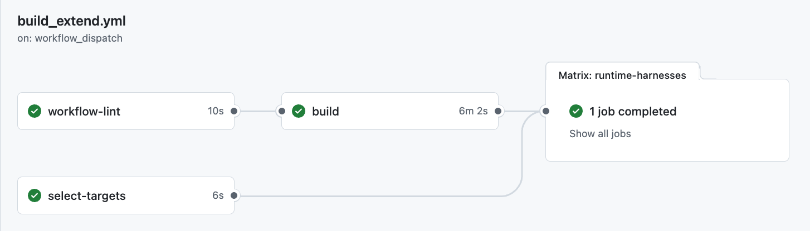

Workflow
A workflow is a GitHub Actions page that runs CI. This guide uses the Build And Check Active Harnesses workflow.
User Guide
This guide is for people who want to launch manual CI runs, choose the right target set, and read the result page without changing repository code.
Before You Run
You do not need to know MOOS internals to launch a run. The Open workflow button above opens the GitHub Actions workflow page where you start one.
A workflow is a GitHub Actions page that runs CI. This guide uses the Build And Check Active Harnesses workflow.
A family is a group of related harnesses, such as waypoint_behavior or colregs. Use a family run when you want every active harness in that group.
A target key names one exact harness, such as cutrange_h01. Use target keys when you want a narrow run with only selected harnesses.
The matrix is the group of job rows GitHub shows after a run starts. Each runtime row is one selected harness.
time_warp controls simulation speed. Keep the default value unless you are deliberately debugging timing behavior.
moos_ivp_ref is the upstream MOOS-IvP branch, tag, or commit to build against. Use main for the normal run.
Normal Flow
For a broad manual check, run several families in one workflow. The workflow builds once, uploads that build as an artifact, then fans out selected runtime harnesses as separate matrix jobs.
Use the Open workflow button at the top of this page, then click Run workflow in GitHub. Keep the branch on main unless you deliberately want to test another branch.
Use batch_family_run for several families, family_run for one family, specific_harnesses for exact target keys, and full for the curated correctness gate.
workflow-lint and select-targets should pass quickly. build prepares the binaries. runtime-harnesses contains the actual harness jobs.
Dispatch Modes
| Mode | Use when | Important input |
|---|---|---|
batch_family_run |
You want one build followed by several family harness jobs. | families=convoy_behavior,cutrange_behavior,waypoint_behavior |
family_run |
You want all active targets for one family from the dropdown. | family=colregs |
specific_harnesses |
You know the exact target keys and want only those rows. | targets=cutrange_h01,waypoint_h01 |
full |
You want the curated high-signal correctness set. | No family or target input required. |
Inputs
dispatch_mode: batch_family_run
families: convoy_behavior,cutrange_behavior,fixedturn_behavior,loiter_behavior,shadow_behavior,stationkeep_behavior,trail_behavior,waypoint_behavior,collision_behavior,obstacle_behavior,opregion
time_warp: 10
moos_ivp_ref: maindispatch_mode: family_run
family: waypoint_behavior
time_warp: 10
moos_ivp_ref: maindispatch_mode: specific_harnesses
targets: cutrange_h01,waypoint_h01
time_warp: 10
moos_ivp_ref: mainGitHub's manual workflow form does not support dynamic checkboxes from repository metadata, so exact harness selection uses comma-separated target keys.
Target Keys
specific_harnesses| Key | Family | Harness | Profile |
|---|---|---|---|
cmgr_h01 |
cmgr | H01-cmgr_unit | manual |
cmgr_h02 |
cmgr | H02-cmgr_motion | manual |
obmgr_h01 |
obmgr | H01-obmgr_unit | manual |
obmgr_h02 |
obmgr | H02-obmgr_motion | manual |
colregs_h01 |
colregs | H01-colregs_classification | full |
colregs_h02 |
colregs | H02-colregs_thresholds | manual |
colregs_h03 |
colregs | H03-colregs_execution | full |
colregs_h04 |
colregs | H04-colregs_parameters | manual |
collision_h01 |
collision_behavior | H01-collision_behavior_motion | full |
convoy_h01 |
convoy_behavior | H01-convoy_behavior_motion | manual |
cutrange_h01 |
cutrange_behavior | H01-cutrange_behavior_motion | manual |
fixedturn_h01 |
fixedturn_behavior | H01-fixedturn_behavior_motion | manual |
loiter_h01 |
loiter_behavior | H01-loiter_behavior_motion | manual |
obstacle_behavior_h01 |
obstacle_behavior | H01-obstacle_behavior_motion | manual |
opregion_h01 |
opregion | H01-opregion_safety | manual |
p01_obstacle |
performance | P01-obstacle_gauntlet | full, ci |
shadow_h01 |
shadow_behavior | H01-shadow_behavior_motion | manual |
stationkeep_h01 |
stationkeep_behavior | H01-stationkeep_behavior_motion | manual |
trail_h01 |
trail_behavior | H01-trail_behavior_motion | manual |
waypoint_h01 |
waypoint_behavior | H01-waypoint_behavior_motion | manual |
p02_colregs |
colregs, performance | P02-colregs_joust | manual |
p03_colregs |
colregs, performance | P03-colregs_traffic_ring | full, ci |
Interpreting Results

| case | case_result | expected | actual | grade |
|---|---|---|---|---|
default_auto_request_pass |
success | pass | pass | pass |
rng_flag_pass |
success | pass | pass | pass |
avoid_disabled_fail |
success | fail | fail | fail |
zlaunch.sh.results.txt as an artifact.